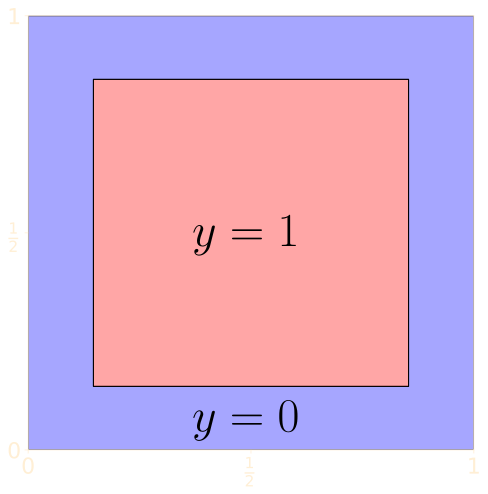
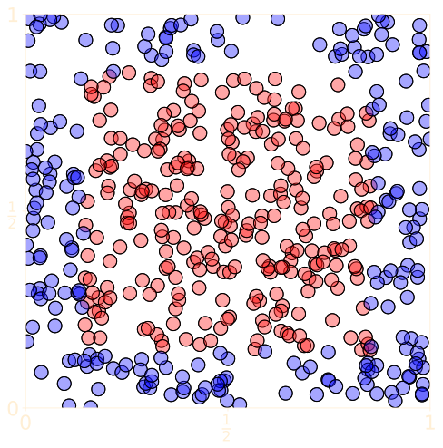

What is Tensorflow?
"An end-to-end open source machine learning platform."
Tensorflow's strengths
Versatility:
- Model development, training, inference
Performance:
- Implemented in C++
- GPU acceleration
Usability:
- Consume using a Python or C++ API
- High level Keras API for deep learning
Ecosystem
Libraries, extension, tooling
Tensorflow lite for mobile/IOT
Tensorflow Extended for production deployments
Officially curated and community contributed models and datasets
Forums, blogs, Youtube channel, > 46000 Stackoverflow questions
tagged "tensorflow", ...
Importing
We'll be using Tensorflow 2.0.
On Colab:
%tensorflow_version 2.x
Import as usual:
import tensorflow as tf
Check your version:
print(tf.version.VERSION)
2.0.0-rc2
Tensors
\(n\)-dimensional arrays of numbers.
Construct them using tf.constant.
a = tf.constant(3) # dtype=int32
b = tf.constant([[3., 1., 4.], [1., 5., 9.]])
print(a, b)
print(b.__class__)tf.Tensor(3, shape=(), dtype=int32)
tf.Tensor([[3. 1. 4.]
[1. 5. 9.]], shape=(2, 3), dtype=float32)
<class 'tensorflow.python.framework.ops.EagerTensor'>
Convert tensors to numpy arrays
c = b.numpy()
print(c, c.__class__)[[3. 1. 4.]
[1. 5. 9.]] <class 'numpy.ndarray'>and vice-versa.
d = tf.constant(c)
print(d == b)tf.Tensor([[ True True True]
[ True True True]], shape=(2, 3), dtype=bool)
Unlike Numpy arrays, tensors are immutable
b = tf.constant([3., 1., 4., 1., 5., 9.])
b[0] = 4TypeError: 'tensorflow.python.framework.ops.EagerTensor'
object does not support item assignment
and can be backed by GPU memory.
with tf.device("/device:GPU:0"):
a = tf.constant([3., 1., 4., 1., 5., 9.])
print(a.device)
/job:localhost/replica:0/task:0/device:GPU:0
Variables
Variables are mutable tensors.
Typically contain trainable quantities, e.g. weights.
Make variables by passing an initial value to the
tf.Variable constructor:
b = tf.Variable([3., 1., 4., 1., 5., 9.])
b.assign_add(tf.ones_like(b))
print(b)<tf.Variable 'Variable:0' shape=(6,) dtype=float32,
numpy=array([ 4., 2., 5., 2., 6., 10.], dtype=float32)>A simple training loop
Let's do simple linear regression with Tensorflow.
Mock up some data:
a_true = tf.constant(-0.25) # intercept
b_true = tf.constant(0.5) # slope
x = tf.random.uniform((96,))
e = tf.random.normal((96,), 0, 0.1)
y = a_true + b_true*x + e
We want to fit a line to the dataset
(x, y).
Select initial values for our
trainable parameters — the intercept
a and the slope
b:
a = tf.Variable(0.)
b = tf.Variable(tf.random.uniform(()))
Choose a learning rate.
lr = tf.constant(0.5)
Write a training loop to perform
gradient descent.
for epoch in range(100): # training loop
with tf.GradientTape() as t:
loss = tf.reduce_mean((a + b*x - y)**2) # (*)
[dloss_da, dloss_db] = t.gradient(loss, [a, b])
a.assign_sub(lr*dloss_da) # "a -= lr*dloss_da"
b.assign_sub(lr*dloss_db)
print(a.numpy(), b.numpy()) # a_true = -0.25, b_true = 0.5-0.2548124 0.5260704
tf.GradientTape() is a
context manager that records details of computation
(*) needed to compute gradients.
(Consider it an implemention detail.)
A stochastic (batched) variant
a_true = tf.constant(-0.25) # true intercept
b_true = tf.constant(0.5) # true slope
x = tf.random.uniform((96,))
e = tf.random.normal((96,), 0, 0.1) # errors in y
y = a_true + b_true*x + e
dataset = tf.data.Dataset.from_tensor_slices((x, y))
Same as previously. Mock up a dataset
(x, y) for the purpose of fitting a
linear model.
tf.data contains functionality for
building data pipelines.
The tf.data.Dataset class is
optimized for large datasets.
a = tf.Variable(0.) # initial intercept
b = tf.Variable(tf.random.uniform(())) # initial slope
lr = tf.constant(0.25) # learning rate
for x, y in dataset.shuffle(96) \
.repeat(100) \
.batch(3):
with tf.GradientTape() as t:
loss = tf.reduce_mean((a + b*x - y)**2)
[dloss_da, dloss_db] = t.gradient(loss, [a, b])
a.assign_sub(lr*dloss_da) # "a -= lr*dloss_da"
b.assign_sub(lr*dloss_db)
Choose initial values for trainable parameters. Select learning
rate.
Loop through the dataset 100 times in 3 batches of 32 samples.
Shuffle it before each iteration.
Same as previously. Compute loss for batch. Compute gradients.
Update
a and b.
Keras
Tensorflow's high level API for deep learning.
Powerful, modular, composable, extensible, user friendly, well
documented.
Prefer it to Tensorflow's lower level API, where feasible.
Keras models
A Keras model describes data flow
through layers.
Each layer of a model encodes the
weights of its connections to
preceding layers.
A dense layer has a unique weight for
each of these connections.
from tensorflow.keras import Model, Sequential
from tensorflow.keras.layers import Dense, Input
A simple feedforward network
model = Sequential([Input(2), Dense(3), Dense(3), Dense(1)])
Model summary
model.summary()
Model: "sequential"
_________________________________________________________________
Layer (type) Output Shape Param #
=================================================================
dense (Dense) (None, 3) 9
_________________________________________________________________
dense_1 (Dense) (None, 3) 12
_________________________________________________________________
dense_2 (Dense) (None, 1) 4
=================================================================
Total params: 25
Trainable params: 25
Non-trainable params: 0
_________________________________________________________________Layers
Layers are stored on the model.layers
[<tensorflow.python.keras.layers.core.Dense at 0x13f3a0f50>,
<tensorflow.python.keras.layers.core.Dense at 0x13f3b5410>,
<tensorflow.python.keras.layers.core.Dense at 0x13f3b5990>]L = model.layers[0]
print(f"L.name = {layer.name}, L.units = {layer.units},
L.input_shape = {L.input_shape},
L.output_shape = {L.output_shape}")L.name = dense, L.units = 3,
L.input_shape = (None, 2), L.output_shape = (None, 3)Inference model.predict
Inference is the process of predicting
y from x by
propagating data forwards through the network.
tf.random.set_seed(666)
x = tf.random.uniform((4, 2))
y_pred = model.predict(x)
x = [[0.7861 0.4992]
[0.2993 0.8064]
[0.8418 0.4165]
[0.0332 0.8668]],
y_pred = [[ 0.5011]
[-1.06 ]
[ 0.7761]
[-1.695 ]]
Understanding inference
A unit computes a weighted sum of its input values.
layers[0].get_weights()
[array([[0.8815,
-1.0451,
-0.9774],
[1.0588, -0.1274, 0.4328]], dtype=float32),
array([0., 0., 0.], dtype=float32)]
[1.0588, -0.1274, 0.4328]], dtype=float32),
array([0., 0., 0.], dtype=float32)]
Weighted sums are computed by matrix multiplication:
weights = [layer.get_weights() for layer in layers]
y = x
for [w, b] in weights:
y = y @ w + by = [[ 0.5011]
[-1.06 ]
[ 0.7761]
[-1.695 ]]
Layers are callable:
z = x
for layer in layers:
z = layer(z)
z = [[ 0.5011]
[-1.06 ]
[ 0.7761]
[-1.695 ]]
y and z are
both equal to y_pred = model.predict(x).
Wait a second...
[[w1, b1], [w2, b2], [w3, b3]] = weights
w = w1 @ w2 @ w3
b = b1 @ w2 @ w3 + b2 @ w3 + b3
y = x @ w + b
y = [[ 0.5011]
[-1.06 ]
[ 0.7761]
[-1.695 ]]
The model is linear! (Did you notice?)
To go beyond linear models, we need nonlinear
activation functions.
Activation functions
Given input \(x\), the output of a
typical dense layer is
\[ y = h(xW + b), \] where
\(W\),
\(b\), and
\(h\) are its weight matrix, bias
vector, and activation function, respectively.
import tensorflow.keras.activations| Name | Shorthand | Formula | Use |
| identity | linear | $h(x)=x$ | output layer in regression problems |
| sigmoid | sigmoid | $h(x)=\dfrac{1}{1 + e^{-x}}$ | output layer in two-class classification problems |
| softmax | softmax | $h_i(x)=\dfrac{e^{x_i}}{\sum_{j=1}^K e^{x_j}}$ | output layer in $K$-class classification problems |
| rectified linear unit (ReLU) | relu | $h(x)=\max(x, 0)$ | hidden layers of deep networks |
You can add an activation to a layer using the
activation keyword argument in its
constructor.
model = Sequential([Input(2),
Dense(10, activation="relu"),
Dense(10, activation="relu"),
Dense(1, activation="sigmoid")])Alternatively, you can add an activation "layer".
model = Sequential([Input(2),
Dense(10), Activation("relu"),
Dense(10), Activation("relu"),
Dense(1), Activation("sigmoid")])Losses and optimizers
Learning algorithm = Model + Loss + Optimizer
Loss functions
Training a neural network means minimizing an appropriate
loss function.
| Name | Shorthand | Use |
| Mean squared error | mse | regression problems, continuous response |
| Binary cross-entropy | binary_crossentropy | two-class classification problems |
| Categorical cross-entropy | categorical_crossentropy | $K$-class classification problems |
import tensorflow.keras.lossesOptimizers
All variants of stochastic gradient descent (sgd).
They all have tuneable parameters, the most important being
learning rate (lr).
from tensorflow.keras.optimizers import SGD
optimizer = SGD(lr=0.005) # default lr = 0.01Compiling a model
We endow a model with a loss function and an optimizer by
compiling it.
model.compile(loss="mse", optimizer="sgd")model.compile(loss="binary_crossentropy",
optimizer=SGD(lr=0.005))A compiled model is ready for training.
Metrics
Metrics are measurements measure quality of fit.
Loss functions are metrics. Other metrics might also be of
interest, though.
The main examples of auxilliary metrics are
training accuracy and validation accuracy.
Specify the metrics you want trackded in the
metrics kwarg of your model's
compile method.
model.compile(loss="binary_crossentropy",
optimizer="adam",
metrics=["accuracy"])Training a model
Train a model using its fit method.
You need to provide training data,
(x, y).
You can specify the number of epochs to
train (epochs),
batch size (batch_size), a
validation split or dataset (validation_data, validation_split), and a sequence of
callbacks (callbacks) in their
respective kwargs.
model.fit(x_train, y_train,
epochs=20,
batch_size=64,
validation_split=0.2)Learning planar regions
Let's train a neural network to determine whether a random point
in the unit square lies in the outer blue region or the inner
red region.

Generate a training set of 512 randomly chosen points
from the unit square, labelled accordingly.

a = 1/np.sqrt(8)
x_train = np.random.uniform(
size=(512, 2))
y_train = np.logical_and(
np.abs(x_train[:,0] - 0.5) < a,
np.abs(x_train[:,1] - 0.5) < a))
model = Sequential([Input(2),
Dense(10, activation="relu"),
Dense(10, activation="relu"),
Dense(1, activation="sigmoid")])
model.compile(
loss="binary_crossentropy",
optimizer="adam",
metrics=["accuracy"])
model.fit(x_train, y_train,
epochs=500)
model.evaluate(x_test, y_test)[0.100700, 0.9628906]Saving models
The Model class has a
save method.
This saves your model — both architecture the weights
— in hdf5 format (.h5), optimized for storing multidimensional array data.
If you forget the .h5 extension, your
model will be saved in
protobuf (protocol buffer) format.
You'll run into protocol buffers if you work with non-Keras
tensorflow models.
model.save("squares.h5")Loading models
The tensorflow.keras.models module
contains a load_model function:
from tensorflow.keras.models import load_model
model = load_model("square.h5")
Keras comes with many useful built-in models. They're located in
tensorflow.keras.applications.
from tensorflow.keras.applications.vgg16 import VGG16